Captain's Web Log(6) - 16 March 2016 - But seriously, how do you get to the South Pole?
Step 0) Fly commercial to Christchurch, NZ
In my case, I left from CVG (the Cincinnati/Northern Kentucky airport) to DFW (Dallas/Fort Worth) on Friday, Jan 1 (having driven down to Cincy from Madison, WI a couple of days earlier).
That was a 3-hour flight, and then I had a 4-hour layover in Dallas. Next up, the longest commercial flight then available (though it was overtaken in February by a new route
from Singapore airlines), 17 hours from Dallas to Sydney, where I arrived at 6 am on Jan 3 (nearly a day for
the flight itself, plus we crossed the international dateline). I had a 13-hour layover in Sydney, but fortunately I had an Australian entry visa, so
I was able to leave the airport and go explore Syndey for a while. I was even able to meet up with a couple of Madison friends who were in town on vacation. Back at the airport,
it's on to New Zealand, another 3-hour flight, arriving in Christchurch just before midnight on Jan 3. For those of you keeping score at home, that's 23 hours on a plane and
40 hours of travel time (and that's only step 0). After clearing security, we caught a shuttle to our hotel near downtown Christchurch.
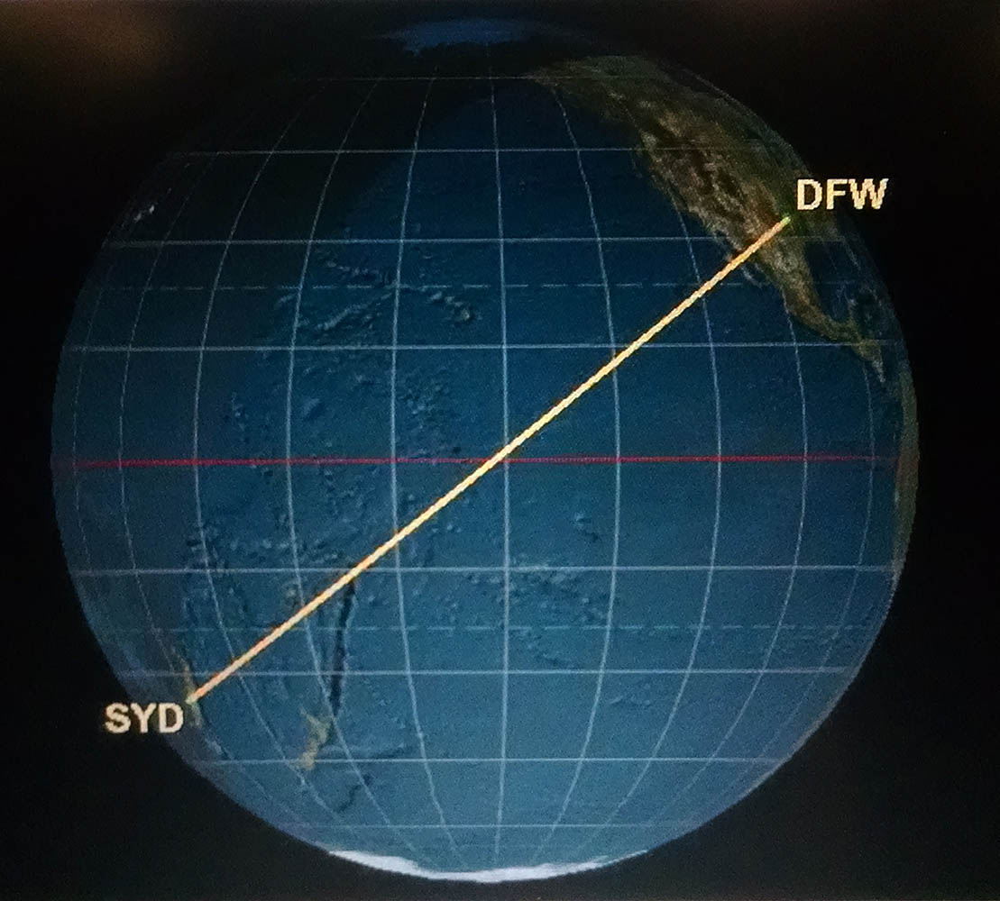
Flight path of the longest commercial flight (then) available
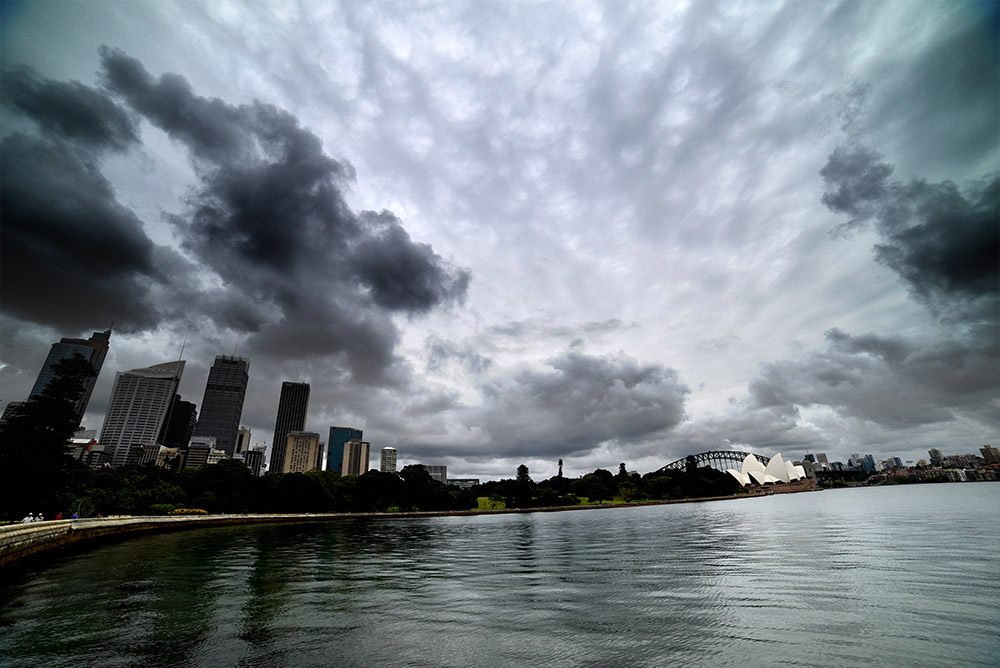
View of Sydney harbor. It was a little stormy as you can see, though I hadn't been caught in the rain (yet) when I took this picture. You can see the Opera House on the right.
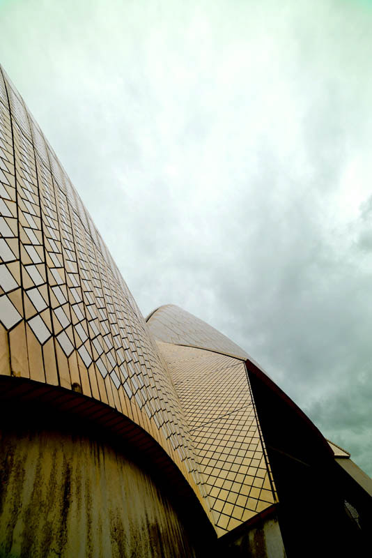
A (much) closer view of the Sydney Opera House.
Step 1) Clothing Distribution
Next up, at 8:15 on Jan 4, we got back on the shuttle to go back to the airport (or rather, right next to the airport) where the USAP
clothing distribution center (CDC) is located and where we receive our ECW (extreme cold weather gear). Boots, boot liners, fleece pants, a fleece shirt, a heavy jacket, a hood, a light jacket, a parka, insulated Carhartt overalls,
wind breaker overalls, several pairs of gloves and glove liners, two pairs of mittens, a hat, ski goggles, a neck gaiter, and a balaclava later, I was geared up and ready to go.
We re-packed our gear with our new ECW, and headed back into Christchurch for an afternoon of exploring.
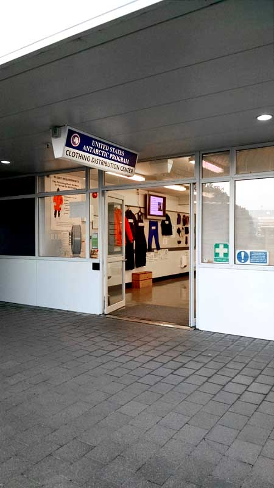
Step 2) Fly to McMurdo
A shuttle picked us up at 5:45 the next morning to go back to the airport once again. We're required to wear part of our ECW on the plane, so we change clothes,
make any final re-packing adjustments, and get in line to check in. At check-in, they do normal air-travel things like check passports, but also unusual things like weigh not only your
bags, but also you wearing all your gear. They need to know the exact weight of the passengers and bags so they know how much fuel they need and how many passengers can fit. At this
point you surrender your checked bags in exchange for a combination boarding pass/necklace. I had two regular checked bags (one full of the ECW I didn't have to wear on the plane, and one with my personal possessions), plus one "boomerang bag"
which is the only one you get back if your flight gets canceled after that point, or if your get on the flight but have to turn back part way there (aka "boomerang") because of a change
in weather. The plane has to carry enough fuel to fly all the way there and all the way back, in case the weather changes for the worse very shortly before landing. In our case that
was an especially large amount of fuel because of strong headwinds. They had to carry so much fuel that they were only able to take 2/3 the normal amount of cargo/passenger weight.
Because of this, many people got bumped from their original flights. We were supposed to be on the first flight of the day, but ended up on the second. Many people who were supposed
to be on the second got bumped to the third (which ended up being canceled all together several hours later, oops).
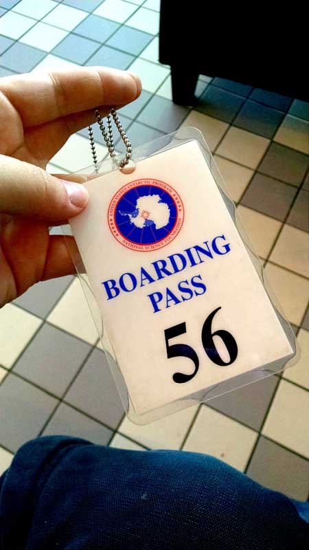
My boarding pass, complete with chain so it can be worn around your neck. They collect them and reuse them, so I suppose thy don't want us to lose them.
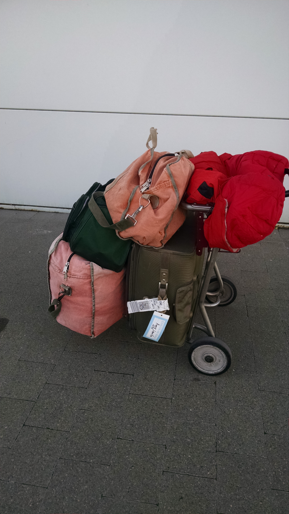
One year of stuff. Top right is my coat (everyone calls these 'Bog Red'), which I was required to wear on the plane, but which was much to hot to wear in the New Zealand summer heat. The green bag on the bottom right is most of my stuff,
and the only bag I checked for the commercial flights. Orange bag on the top-middle is my 'boomerang bag'. Green duffel on the left was my carry-on for the commercial flights, and also for the McMurdo and Pole flights. Orange bag on the
bottom left is full to the brim with all the ECW I wasn't wearing on the plane.
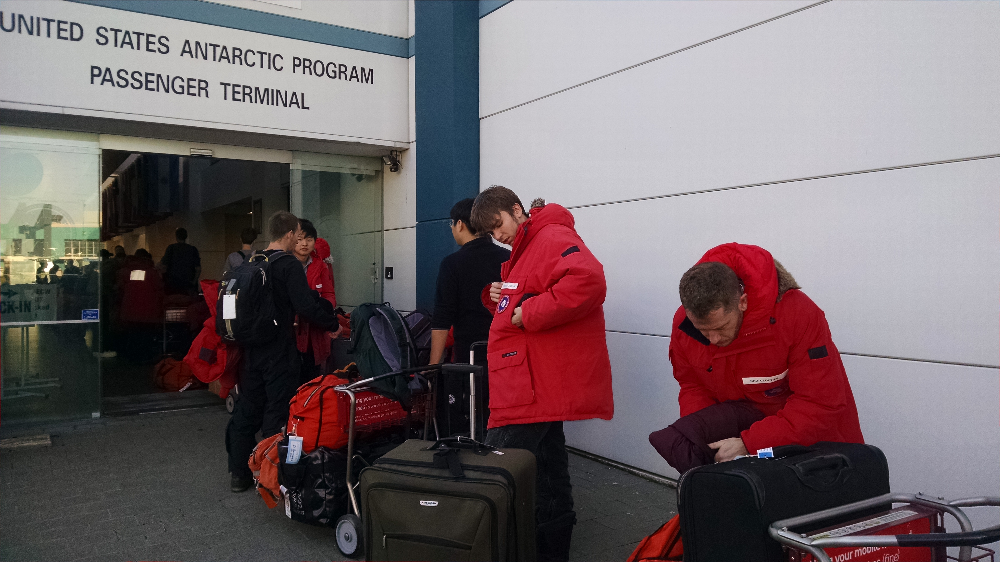
Waiting to weigh in with all of our stuff.
Then we watched a training/safety video, and wait for our flight. Since we were bumped to the second flight, we had a fair amount of time to kill, so we went to the "tourist" part of the US
Antarctic Center and ate in the cafe there.
Finally it was time to board the (converted school) bus to ride across the street to where the planes are. Most flights are on LC-130s (C-130s that have been fitted with both wheels and skis for landing on either a regular landing strip or on
compact snow or ice). These are known colloquially as Hercs (short for Hercules), and are operated by the New York Air National Guard. We're driving towards the plane... we're almost there... we're driving away from the plane.
In the 15 minutes it took to board the plane and drive over to the tarmac, there had been a weather delay. Oops. So we drove back to the terminal to wait another hour. Board the bus again. Drive to the plane again.
The crew standing outside the plane starts shaking their heads and laughing as we approach. Apparently we're an hour early. This time we drove to a different passenger terminal slightly closer to the plane, and waited another hour
(protip: Big Red makes a great pillow for naps on the floors of USAP passenger terminals).
Eventually the bis driver came back and roused us to get on the bus again and drive back to the plane. This time we actually got off the bus (progress!!), and got on the plane. We taxied to the runway. And waited. And waited. And waited.
There was a problem with one of the instruments. Luckily, one of the
military guys catching a ride with us happened to be from the avionics department. He went up to the cockpit, investigated, and we're back to it. And we waited. And waited. This time the VOR needles were apparently 100 degrees off. Random
avionics dude can't fix this one. We taxied back and get the actual on-duty avionics guy. He fixed it in just a matter of minutes, yay! But by that time we had been sitting around so long running the engines that we didn't have enough fuel left.
And you can't fuel a plane
with passengers on it (safety rules I guess), so we (you guessed it) got back on the bus. Finally, when they were done refueling, we got back on the plane and this time we actually took off! 8 hours later, we were on the ground at McMurdo.
At this point it's
just after midnight on Jan 6. By the time we deplane and ride Ivan The Terrabus up the hill to the station, and get our room keys, we're just in time to catch the last couple minutes of 'midrats', the midnight meal served in the dining hall
so that people who work the nigh shift can have 'lunch'. We're scheduled to fly to Pole early the next morning, so we have to stay awake until our 'bag drag' time of 1:30am so that we can be weighed with our luggage and ECW (again) in
preparation for the Pole flight. We eat, bag drag, and finally it's time for some sleep. I'm in a quad in the dorm, but with just one other person; my fellow SPT winterover, Christine. We wake up bright and early the next day, grab
sandwiches and juice boxes from the galley to bring with us on the plane, and head back to the passenger terminal at 7am, after one last check of the flight manifest screen outside the galley to make sure our flight hasn't been rescheduled
or canceled. Of course by the time we walked the 5 minutes from the galley to the terminal, the flight has been bumped to the evening (and was eventually bumped again to the next morning). Back to sleep! On the up-side, that meant we had time to do a little exploring of McMurdo during our bonus day
in town. We hiked up Observation hill, and Christine scored us a tour of the Discovery Hut.
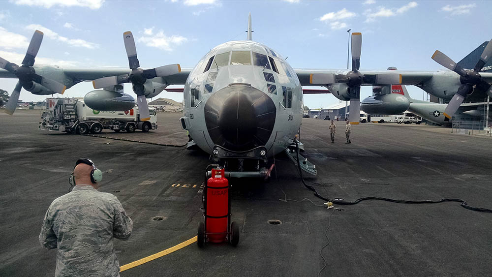
Sitting in the school bus watching the plane be refueled.
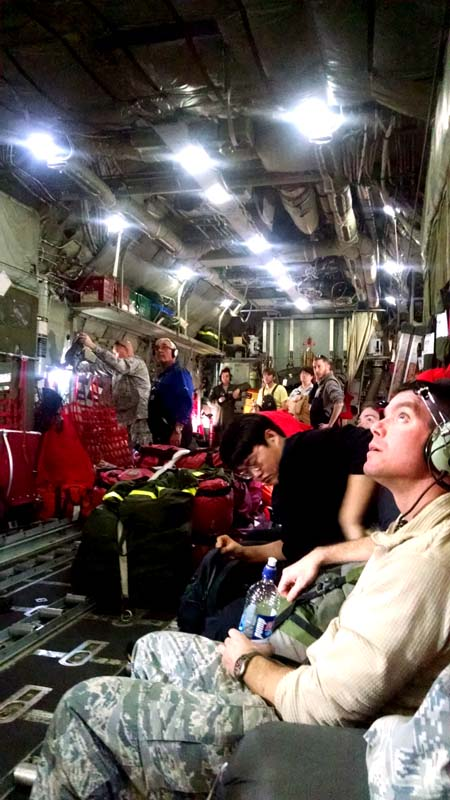
The inside of the LC-130
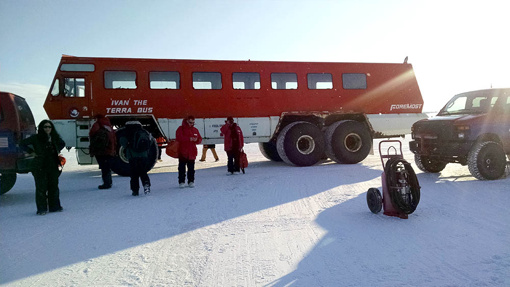
Ivan the Terrabus, our ride up the hill from the landing strip to McMurdo station.
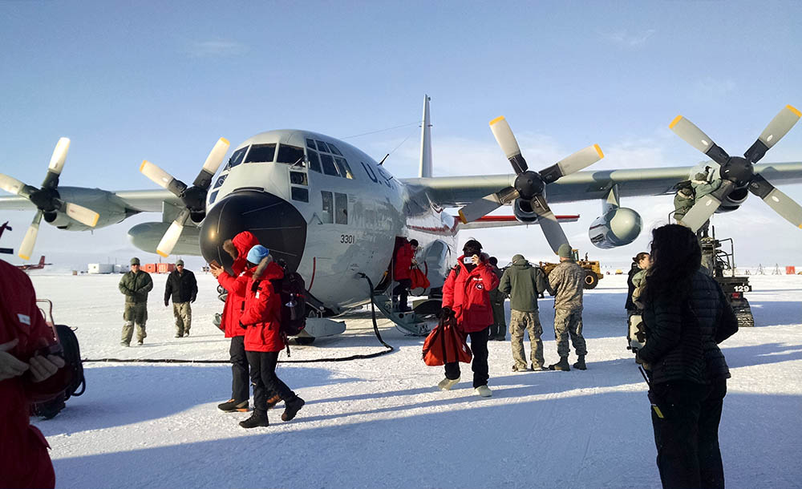
A last look back at our plane, landed Pegasus Field near McMurdo station
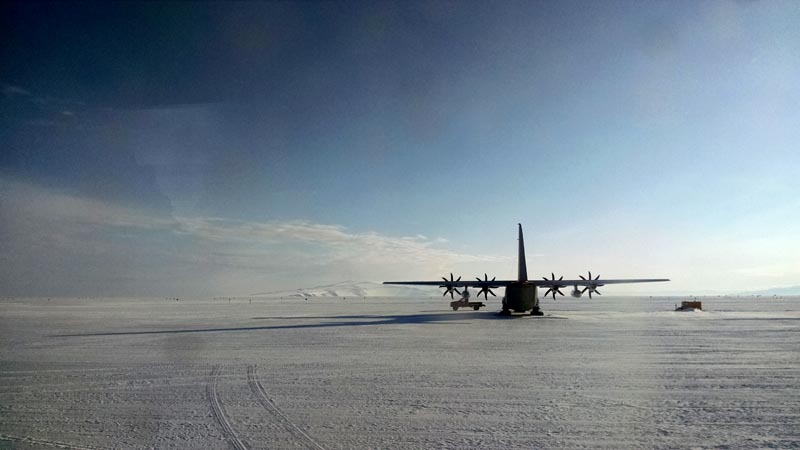
Another Herc (with weird propellors that are supposedly more efficient) that we passed on our way up to the station.
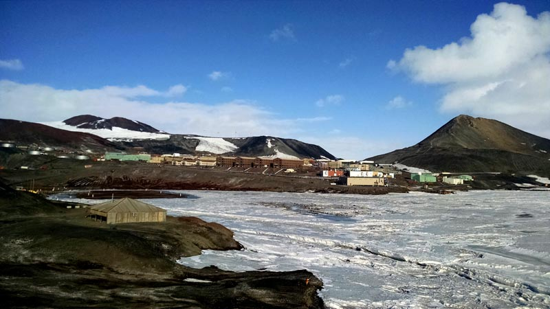
McMurdo Station as seen from Hut Point (that's Observation Hill on the right, and the wood building is the front left is the Discovery Hut)
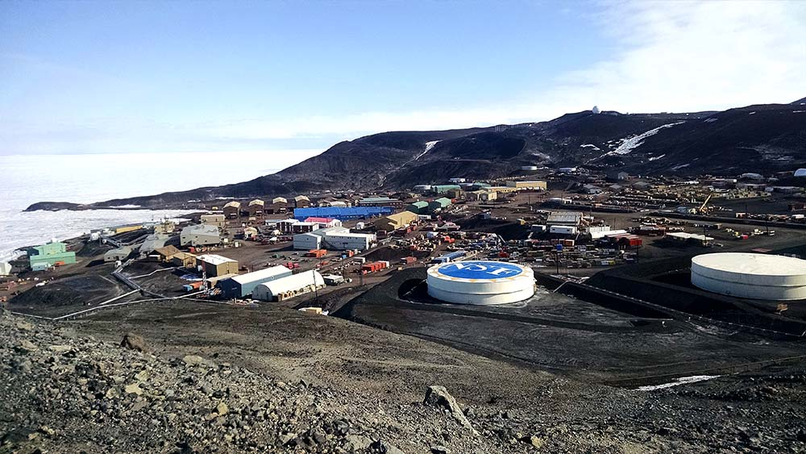
View of McMurdo from Observation Hill (that peninsula on the back left is Hut Point)
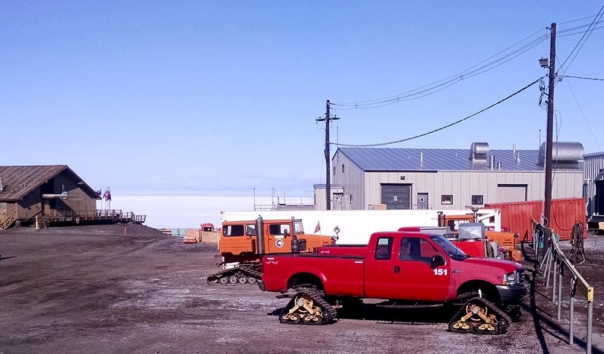
Some of the pickup trucks here and at Pole are fitted with continuous track instead of tires so they can get around better in snow (and in McMurdo, mud).
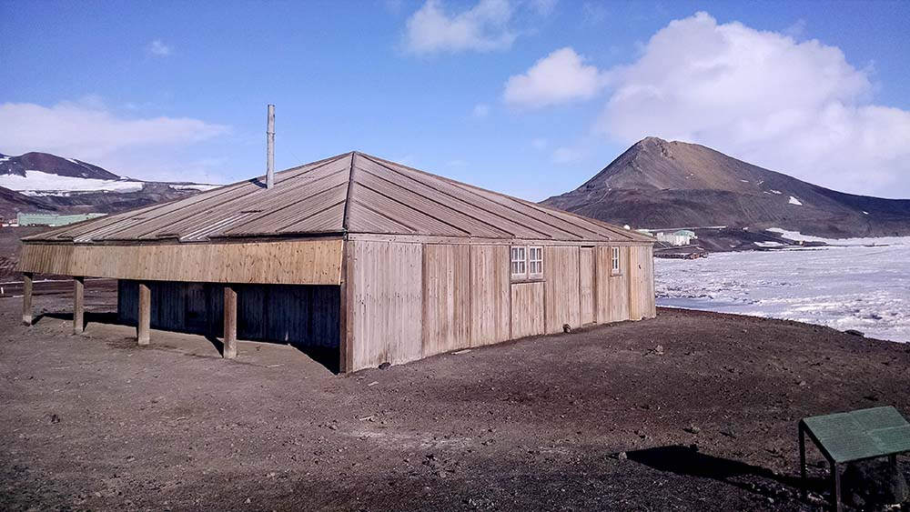
The Discovery Hut, which was built in 1902 by Robert Scott (of the famously failed attempt to be the first to reach the South Pole; Roald Amundsen reached the Pole just days before Scott's party,
who perished on their return to the coast) and originally used to store supplies. It was used as a store house and temporary sleeping quarters by Shakleton's expedition in 1908, and served as an
emergency shelter for members of the Ross Sea Expedition, who were stranded there over the winter of 1915. The hut remained untouched thereafter until the 1950s, and many of the original furniture and
provisions, including piles of seal meat, dessicated in the dry, cold air, remain in place, as they were in 1915.
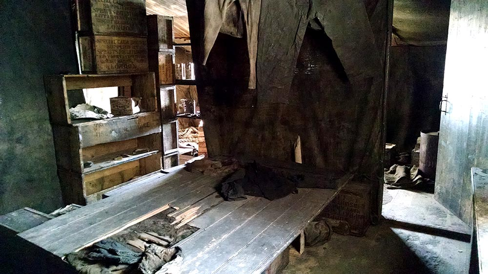
Sleeping quarters inside the Discovery Hut
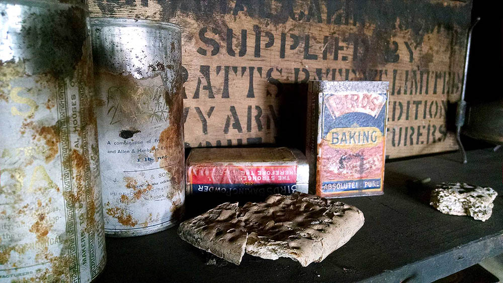
Old rations inside the hut
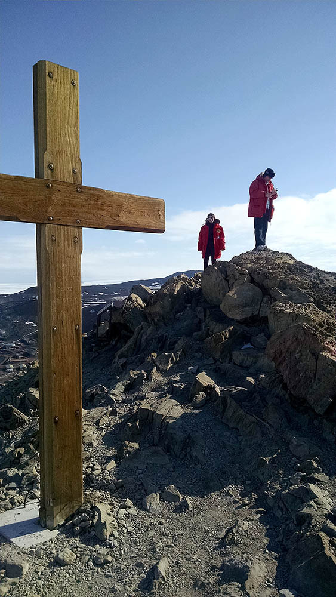
The peak of Observation Hill. The cross memorializes Robert Falcon Scott and his party, who succumbed to exhaustion, starvation, and cold on their return journey from the South Pole in 1912.
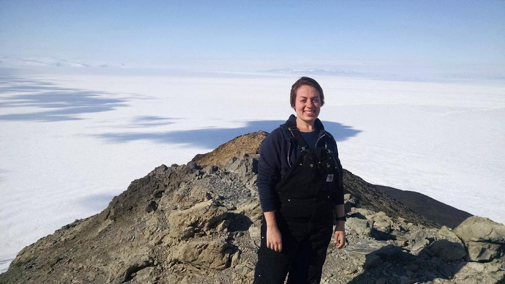
Me standing at the top of Observation Hill, overlooking McMurdo Sound.
Step 3)Fly to the South Pole!
Finally, the next morning we rode back down to the airfield, boarded another LC-130, and we were off! An hour and a half later, just before noon on Jan 7, we landed at the South Pole.
I didn't take any pictures as we got off the plane at the pole; I was too focused on huffing and puffing my way from the plane to the station with my rather heavy carry-on and new-found lack of oxygen (the
pole is at 9300 feet elevation, but the effective altitude (because the air is even thinner here than at 9300 feet in a warmer place) ranges from around 10,000 - 11,000 feet. Once inside, we set our bags in the hall
and piled into a nearby lounge to watch an orientation video and get a short intro to the station from Craig, our winter site manager. Then room assignments were passed out, and after dropping my carry-on in my room,
I made my way to the galley to catch the last few minutes of lunch (which ends promptly at 1pm). So begins nearly a year at the South Pole.
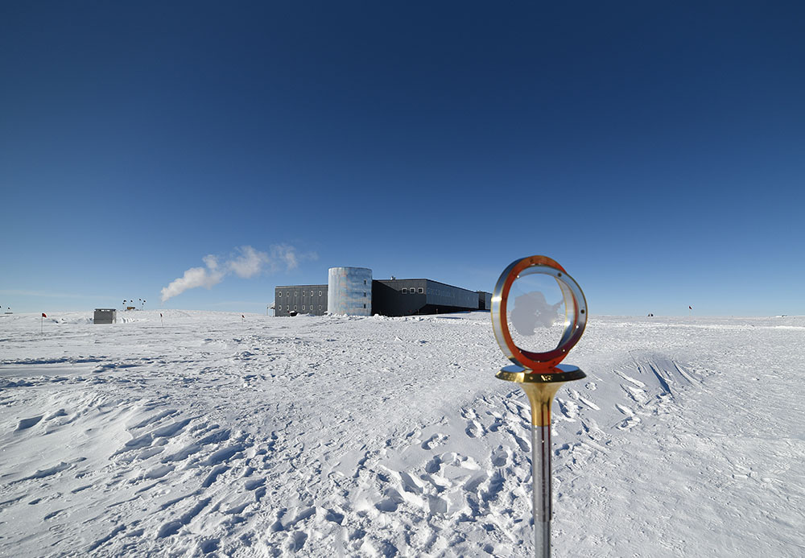
Last year's geographic south pole marker, with the station in the background
What I've been up to
The telescope has been running pretty smoothly since we fixed the GPS fiasco (knock on wood), so I've jut been settling into a routine of working on my dissertation, monitoring the telescope, and goofing off (pretty
much in that order).
Current conditions
Temperature: -71F/-57C
Windchill: -105F/-76C
Wind: 9.2 kts Grid 83
Barometer: 674.2 mb (10,848 ft/3,306m)
Sun elevation above the horizon: 1.5 degrees (Winter is coming)